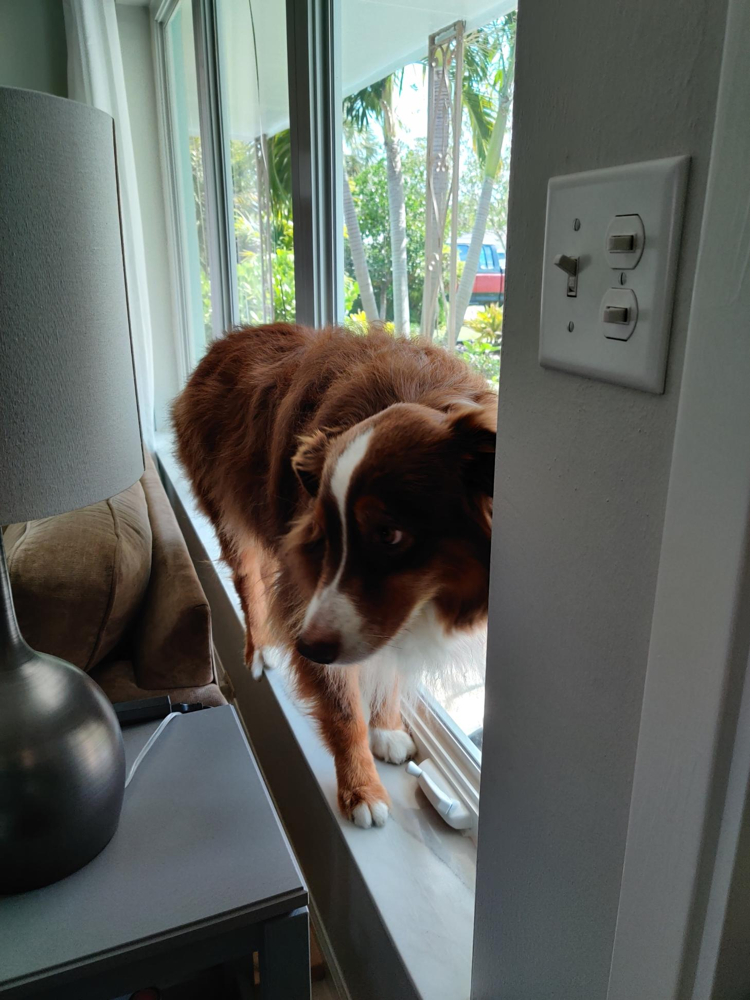

Sharing stories of adventure
I am an aspiring journalist with a love of the outdoors and adventure. In a perfect world, I want to combine these pasions, sharing stories that convey the depths of human nature.
As a copy editor intern, I edited, fact-checked and style-checked both copy from the wire and the newsroom. I paginated inside pages for the daily print edition and proofed those pages as well.
As a staff writer, I pitch, source and write stories about the University of Maryland Student Government Association as well as other topics and features.
As a copy editor, I fact-checked and style-checked copy.